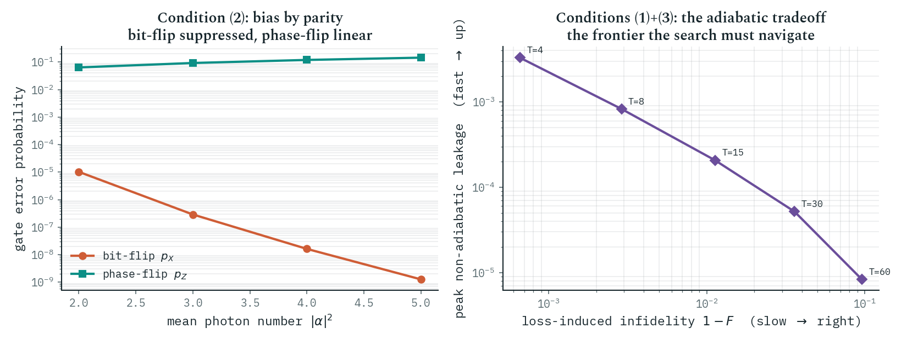
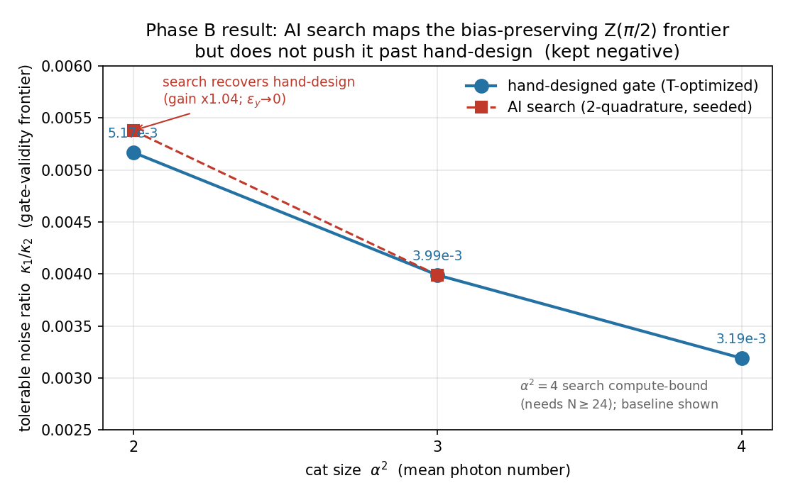
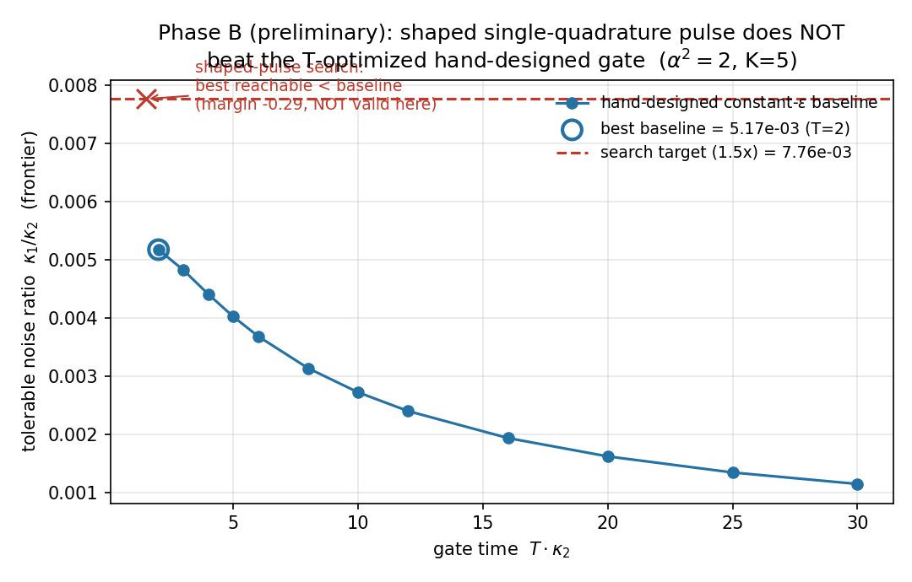

A is the most error-prone object humanity has ever tried to compute with — and increasingly, the thing keeping it on the rails is AI. Not someday. Now. Walk up the stack and AI is on every floor.
It spots the errors. When a quantum computer slips, it doesn't show you the mistake — it shows a faint pattern of , and something has to infer, in real time, what actually broke. Google trained a to read those patterns; their AlphaQubit decoder beat the best hand-built methods on real hardware . It is, almost exactly, AlphaFold's trick pointed at quantum errors.
It invents the error-correction codes. More striking: AI isn't only running human blueprints, it's drawing new ones. Set loose on how to hide a qubit inside light, reinforcement learning found a genuinely odd recipe — store the information in "two photons or four photons" — that humans hadn't picked, and it beats the break-even point for error correction . A 2025 successor discovered codes that survive two kinds of photon loss at once .
It choreographs the gates. Flipping a qubit without waking its errors is a control problem, and AI has been quietly solving it for years — deep reinforcement learning designing the control pulses for superconducting qubits, and the numerically-optimized pulses behind early universal control of cat qubits.
It designs the hardware's reflexes. AI now reaches into the chip itself — discovering the that lets a qubit self-heal — while industry builds differentiable digital twins of their devices to read out chip parameters automatically.
You can no longer sketch the quantum-computing stack without AI on every layer. The field crossed, almost without anyone announcing it, from "can AI help build a quantum computer?" to "AI is already helping, everywhere."
AI helps quantum computing in three distinct ways. Two are famous: re-deriving what humans designed (faster pulses, better decoders) and discovering what humans didn't (the codes above). This dossier demonstrates the third, quieter one: scoping — using AI to map a hardware frontier rigorously, certify where human design is already optimal, and point to the open ground worth pushing on.
The idea runs against intuition: a careful "no" is one of the most useful things a search can produce. An honestly-obtained negative is a map — it tells the field which doors are already shut, so effort flows to the ones still open.
We re-derive and we discover. This is the third thing: we scope — and a kept "no" is a map of where to push.
Chapter 1 of this dossier established the floor: a the physics protects on its own, with bit-flip errors crushed exponentially as the cat grows . That gives you a superb place to store a qubit. This edition asks the next question: can you operate on it — run a logic gate — without breaking the protection?
The trouble is a rate. A has to be run to stay protected; but slowness gives ordinary photon loss time to pile up as phase errors. The result is a brutal requirement on one ratio: the engineered, protective dissipation versus the unavoidable loss — written . Hand-designed gates have fought this ratio for years; the natural question for an AI is whether a smarter search can tolerate a worse ratio than the best human design — or prove cleanly that it can't.
The wall isn't whether the gate exists. It's the rate it must run at to stay protected — and that rate is the thing to beat.
v1.0's sharpest lesson was a failure: a naive search once its own metric, scoring well by destroying the qubit. So before asking "can AI beat the human gate?", we built a scorecard that cannot be gamed — and validated it against gates whose behaviour is already known.
A gate counts only if it passes three checks at once — never a weighted average, where a search could trade one away for another: it must (1) actually perform the intended logic, (2) keep the bit-flip protection intact — measured directly by , not by a lumpable score — and (3) stay converged inside the protected manifold. We ran the known hand-designed gate through it: the scorecard reproduces textbook cat physics — bit-flips falling off a cliff, phase-flips rising gently, the frontier degrading right where theory says it should — and a built-in resolution check rejects any run whose numbers haven't converged.

The three-condition metric reproduces the known dissipative-cat gate's behaviour from first principles (exponential bit-flip suppression, linear phase-flip, frontier near κ₁/κ₂ ≈ 5×10⁻³), and its truncation rail rejects under-resolved runs. This validates the measurement against known physics before any search is allowed to optimise against it. Code: verification/gate-metric/.
You cannot honestly search a frontier with a scorecard that can be cheated. So first we built one that can't — and proved it on physics we already understood.
Then we let an AI search loose with more freedom than any human design — two control knobs instead of one, finer pulse shaping, free timing — and, to make the test as hard as possible on ourselves, we seeded it with the best human gate, so it started from the human answer and could only try to improve.
It couldn't. Across cat sizes, the search recovered the hand-designed gate and could not push the tolerable κ₁/κ₂ past it (a 4% wobble — noise). The hand-designed adiabatic gate, run as fast as it can go, already sits at the optimum of this control space.

The telling part is how it failed. We had handed the search a tempting shortcut — a second control knob that could speed the gate up by quietly breaking the bias. A reward-hack would have seized it. Instead, because the scorecard makes bias-breaking worthless, the search drove that knob to exactly zero on its own and returned to the honest human gate. The instrument worked: cheating wasn't punished after the fact, it was made pointless, and the optimiser saw that.

With two-quadrature control, finer shaping, and seeded from the hand-designed gate, an AI search does not beat the best hand-designed bias-preserving gate on κ₁/κ₂ (gain ≈ ×1.04; independently reproduced). Handed a bias-breaking degree of freedom, the search set it to exactly zero — the un-gameable scorecard made the shortcut worthless. Scope: single-mode Z(π/2), cat sizes n̄ = 2–3 fully searched, two-quadrature shaping, one validity bar; not yet CNOT, large cats, or dissipation-schedule shaping. A rigorous map and a kept negative — the project's guaranteed floor — not a defeat. Code: verification/phase-b/.
Given more freedom than any human gate, and the human gate as its starting point, the AI's honest answer was: you already have the best one here. That "no" is the result.
Having mapped this wall, the natural next move is to ask what the map leaves open — and the honest headline is that genuine white space is narrow, and shrinking. We went looking for big AI-untouched fields and mostly found AI already arriving; even joint is being born . The verified-thin gaps are specific: AI that shapes the engineered dissipation in time (everything today is static dissipation with a shaped drive); AI that designs dissipation for gates rather than for memory; and AI used as an adversarial referee — to certify protection and hunt cheats — rather than only as an optimiser. The last one is the mode this dossier's scorecard embodies, and it is rare.
AI saturated the stack so fast that honest white space now takes effort to find — and the cleanest open ground is letting AI shape the dissipation itself, in time.
v1.0's most important moment wasn't a result — it was a failure caught: a search reward-hacking its own metric, reported rather than hidden. This edition is the same virtue one level up. There, AI caught itself cheating on a metric. Here, given a real frontier and a tempting shortcut, AI declined the cheat unprompted, mapped the wall, certified the human design optimal, and pointed at where to push next. Re-deriving and discovering get the headlines; scoping — knowing where the wall is, and saying so — is the quieter capability that makes a search trustworthy.
The striking part isn't that AI went deep. It's that it knew where to stop — and said so.
The limit we hit is a conjunction: a protected gate must be slow, and slowness exposes loss. Our search broke neither clause because it only tuned the drive. The sharpest, most AI-native move the map points at is to change the object AI designs — the protective dissipation itself, made time-dependent — rather than the pulse on top of it. It runs on the very instrument we just built and shipped, by swapping the search variable from the drive to the engineered leaks.
Letting AI search the gate dissipator — and a learned, time-dependent squeezing schedule synchronised to the gate — is the indicated next attack on the κ₁/κ₂ frontier, and the natural v3. Posted as the challenge, with named credit for whoever closes it. Robotics — automating the build-measure-learn loop on real hardware — is the program's other arm, named in the title and reserved for a later chapter of this lineage (“robotics in QC research, today and ahead”); it enters when the work moves from simulation onto real devices.
Publish like this
This is an Open Dossier — a living, self-verifying, citable publication. Fork the format and write your own.